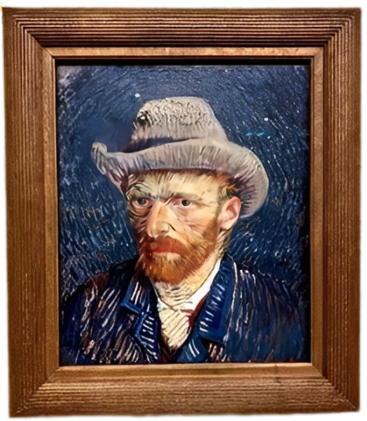

15 de abril — Dia Mundial da Arte
Um tributo à imaginação, à expressão e à história visual da humanidade. Inspirado em artistas que transformam ideias em imagens inesquecíveis.
O Dia Mundial da Arte é uma oportunidade de olhar para pinturas, fotografias, filmes, quadrinhos e performances com mais atenção. Cada obra carrega uma história: de quem criou, de onde nasceu e de quem a interpreta.
Ao celebrar esta data, reconhecemos a arte como linguagem universal, capaz de atravessar fronteiras e aproximar realidades diferentes. Ela inspira empatia, questiona padrões e amplia o nosso repertório cultural.
Dentro de campo, o futebol também funciona como um grande ateliê a céu aberto: cada toque na bola, cada drible e cada passe revelam escolhas estéticas, criatividade e leitura de jogo. Jogadores criam composições em movimento, desenhando trajetórias e ritmos que encantam torcidas no mundo inteiro.
“A arte existe porque a vida não basta.” — Ferreira Gullar
A arte também acontece no som: trilhas sonoras, canções e musicais que ampliam o significado das imagens. Ouça a faixa abaixo enquanto navega pela página.
Abaixo, três artes BRASILEIRAS que expressam diferentes estilos e formas de representação. Por meio de cores, formas, contrastes e composições marcantes, essas obras transmitem movimento, identidade cultural e narrativa visual, revelando a diversidade e a criatividade presentes na arte do Brasil.